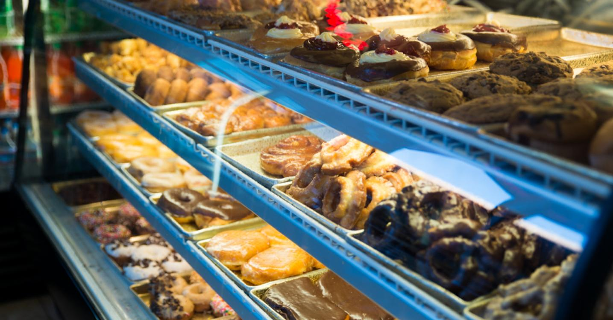

Since the 1930s, King Pin Donuts has been a family-owned and operated business. We use fine ingredients and traditional methods to produce exceptional donuts, cakes, muffins, pastries, and cookies. King Pin has been a pioneer in the baking industry, and is the first to offer trans-fat free products in the United States. While we continually strive for innovation at King Pin Donuts, we're still making our creations the way Dari, the ownder since 1980, intended to feed his young kids, quality, daily fresh, service. We are proud and honored to serve you our products!
